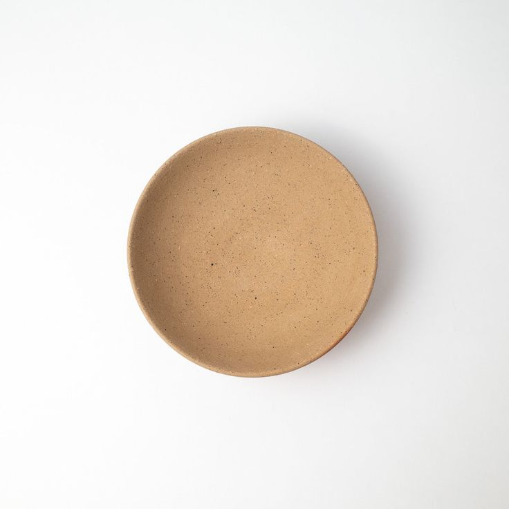

otonarisan
備前焼/Bizenware
「日本六古窯」の中で最も古い焼き物です
備前市の伊部地区が代表的な産地で、釉薬を使わず、絵付けもせずに高温で焼くのが特徴です



歴史/History
古墳時代の須恵器の製法が次第に変化したもので、平安時代に熊山のふもとで生活用器の碗・皿・盤や瓦など南大窯跡が生産されたのが
始まりといわれています
鎌倉時代には、主に壷・甕・擂鉢が多く作られましたが、この頃から次第に現在の備前焼特有の赤褐色の焼肌のものが焼かれ始めました